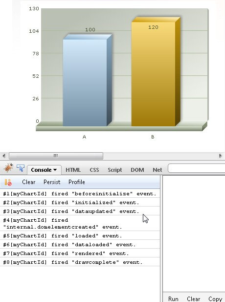
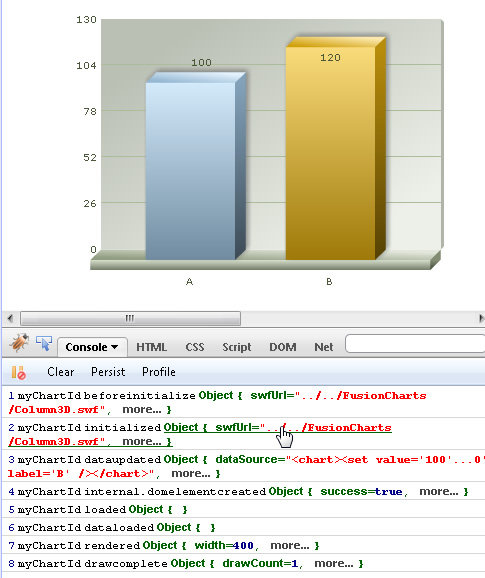
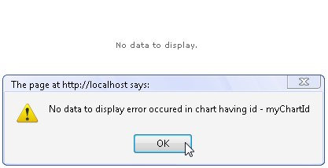

| Debugging using JavaScript | |||||||||||||||||||||||||||||||||||||||||||||||||||||||||||||||||||||||||||||||||
|
FusionCharts JavaScript class provides a developer-friendly mechanism to debug charts. You can debug your charts in two ways.
Using the FusionCharts JavaScript Debug Mode Apart from the Debug mode of individual FusionCharts SWFs, the FusionCharts JavaScript Library has its own debugMode as well. This allows users to watch the chart’s JS activities and debug charts accordingly. To enable the JavaScript Debug Mode, you need to write the following lines of code: FusionCharts.debugMode.enabled(true); Next, you need to specify where you will like to display the debugMode output. In case you want to see the error within the browser’s JavaScript console, you will need to write the following lines of code. FusionCharts.debugMode.outputTo( function() { console.log(arguments); } );
The above line of code will output the debugMode messages somewhat as below:  See it live! Note that, depending upon your browser, you may need to specifically enable “JavaScript Console”. In case, you want detailed information regarding each event, you may use a more advanced JavaScript debugger such as FireBug (available for FireFox) or FireBug-Lite (can be used on most browsers). If you are using an advanced JavaScript console (like Firebug) that can display object hierarchy, you may want to change the debugMode output format.To set the output format to ‘verbose’, use the following line of code: FusionCharts.debugMode.outputFormat('verbose');
 See it live! All the above lines can be written in one compact line of code: FusionCharts.debugMode.enabled( function() { console.log(arguments); }, 'verbose');
The supported debugMode output formats are: text (default), verbose and event. When the outputFormat is set to event, the output function assigned to the debugger (using debugMode.outputTo method) is sent arguments exactly matching FusionCharts XT Advanced events model: eventObject, argumentsObject. FusionCharts XT also provides an interesting function to remotely auto-include Firebug-Lite within your browser. This helps in case you are running a browser with reduced features of ‘console’.
To use this feature, write the following lines of code: FusionCharts.debugMode._enableFirebugLite();
This method takes time for the console to load (also needs internet connectivity) as the Firebug script is remotely loaded. FusionCharts.debugMode._enableFirebugLite('firebug-lite.js');See it live! |
|||||||||||||||||||||||||||||||||||||||||||||||||||||||||||||||||||||||||||||||||
| Error Code and Description | |||||||||||||||||||||||||||||||||||||||||||||||||||||||||||||||||||||||||||||||||
|
FusionCharts JavaScript Class displays or logs errors messages when an error occurs while rendering a chart. The error message contains an error code. The table below contains the list of Error codes and the description of each error.
|
|||||||||||||||||||||||||||||||||||||||||||||||||||||||||||||||||||||||||||||||||
| Using simple error events | |||||||||||||||||||||||||||||||||||||||||||||||||||||||||||||||||||||||||||||||||
|
There are three error events which can be listened to using simple event listening. They are described as follows:
To know more on how to listen to simple events like the ones listed above read FusionCharts XT and JavaScript > Listening to events page. The image and the code below shows how NoDataToDisplay error is listened to and shown an alert message when the event is fired:  <html>
<head>
<title>Listening to simple error event NoDataToDisplay</title>
<script type="text/javascript" src="../../FusionCharts/FusionCharts.js" ></script>
</head>
<body>
<div id="chartContainer">FusionCharts XT will load here </div>
<script type="text/javascript"><!--
var myChart = new FusionCharts("../../FusionCharts/Column3D.swf", "myChartId", "400", "300", "0", "1");
myChart.setXMLData("<chart/>");
myChart.render("chartContainer");
function FC_NoDataToDisplay(DOMId)
{
alert("No data to display error occurred in chart having id - " + DOMId);
}
// -->
</script>
</body>
</html>
In the above code we have created a chart and set an empty XML with just the root element <chart/>. This makes the XML devoid of any chart data. Hence, the error event FC_NoDataToDisplay is being fired. We listen to that event declaring a function of the same name. The function gets automatically called by the chart in this case. We show an alert message when the function is called. See this example live! |
|||||||||||||||||||||||||||||||||||||||||||||||||||||||||||||||||||||||||||||||||
| Using advanced Error and Warning Events | |||||||||||||||||||||||||||||||||||||||||||||||||||||||||||||||||||||||||||||||||
|
FusionCharts JavaScript Library provides two error events.
You can listen to the above events globally or on a per-chart basis. To listen to an error event globally, use the following line of code: FusionCharts.addEventListener('Error', function (eventObject, argumentsObject) {
alert('There was an error with charts!\n' + argumentsObject.message);
});
You can also use the legacy simple event method: function FC_Error(eventObject, argumentsObject) {
alert('There was an error with charts! \n' + argumentsObject.message);
}
The arguments of the event are:
To know more on events and listening to the events read FusionCharts XT and JavaScript > Listening to Events page. |